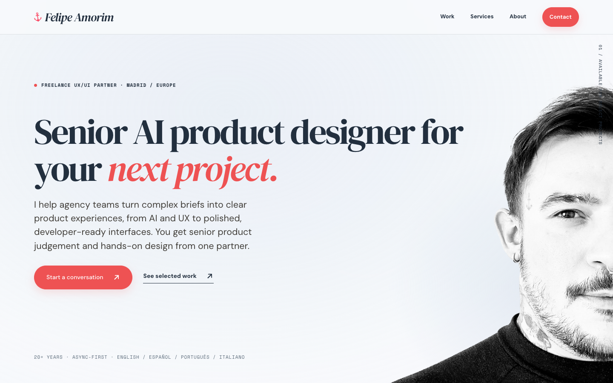
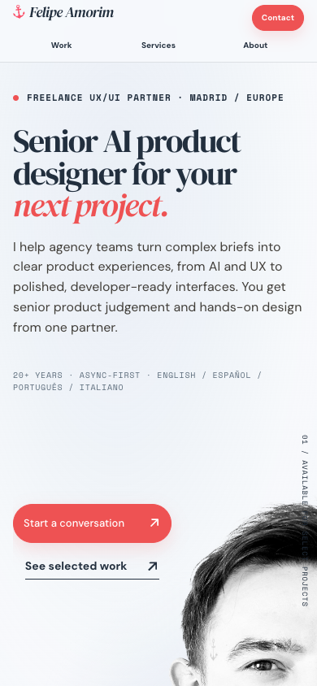
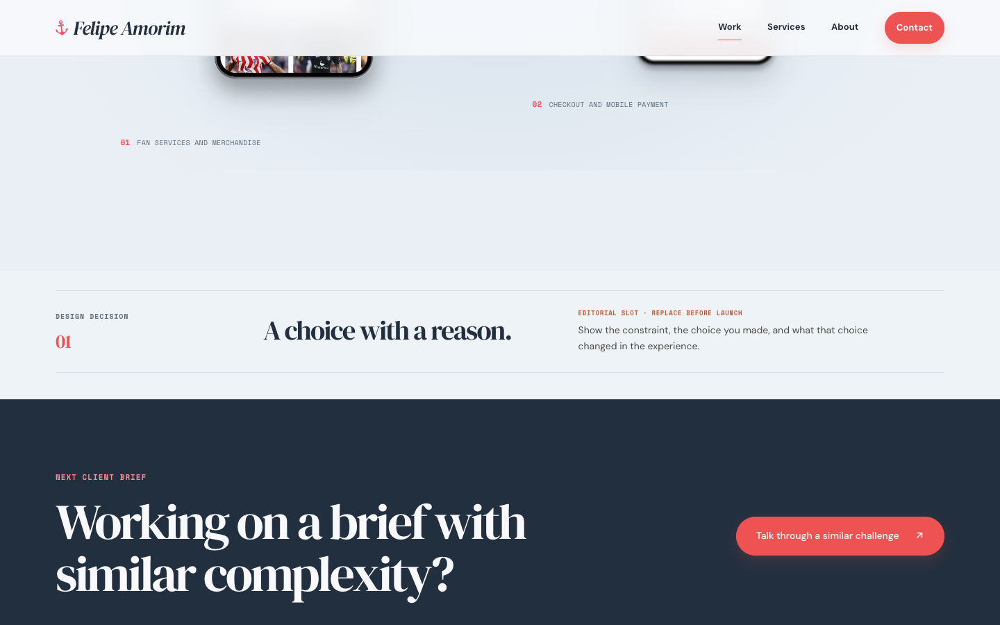
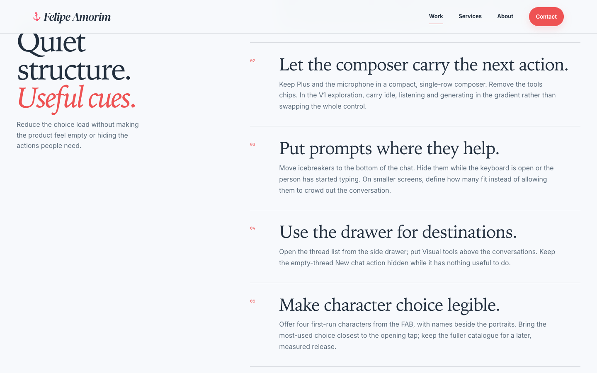
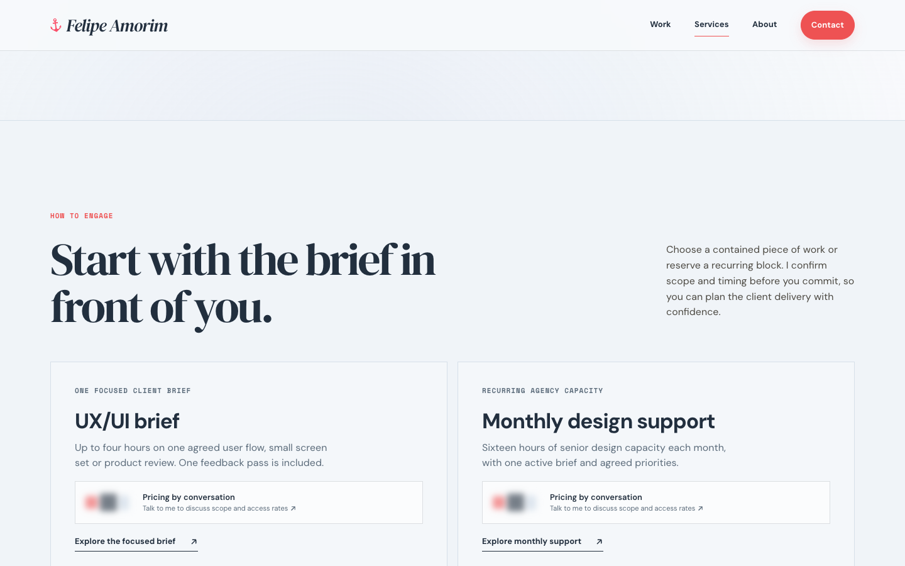

Understand
“He works with agencies and designs AI products.”
Clear entryExpert assessment / 01 October 2026
Your portfolio presents a clear agency proposition and a distinctive visual identity. It needs a more consistent answer to the buyer’s next question: “Can I trust Felipe with this brief?”
The positioning, personality and work support a conversation with someone who already has context.
Unfinished case content, uneven evidence and a fragile email handoff leave too much for a new buyer to resolve.
18 buyer-facing pages inspected · Live browser evidence · Desktop, tablet and mobile · Review of revision 5d2d049
01 / Agency fit
The agency audience is explicit. The senior, hands-on promise is credible. AI is present in both the headline and the work. The weakest part is helping a stranger evaluate your contribution and confidently start an engagement.
| Buyer question | Verdict | Evidence |
|---|---|---|
| Is this for a team like ours? | Meets | Home and Services address agency briefs, delivery processes and senior design capacity directly. |
| Is he an AI design specialist? | Partly | Luzia leads the work. Services names waiting, uncertainty, correction and recovery. Case structure makes that expertise harder to assess. |
| What did he personally contribute? | Uneven | Role labels help. Several narratives describe the artefact more clearly than your decisions; reserved editorial slots are still visible. |
| Can he fit our scope and team? | Small briefs clear | Collaboration and handover are explained. A substantial defined project is less clearly accommodated by the two prominent capacity offers. |
| Does the craft inspire confidence? | Strong, unfinished | Distinctive type, portrait and colour system. Sticky overlap, tablet logo collisions and narrow CTA clipping remain. |
| Can everyone inspect the work? | Needs repair | Small CTA contrast and click-only gallery enlargement create specific accessibility barriers. |
| Can I reliably get in touch? | Depends on setup | Direct email and honest handoff copy are good. The form still depends on an external mail app and has no independent recovery path. |
“He works with agencies and designs AI products.”
Clear entry“I can see how he thinks and what he did.”
Largest editorial gap“His engagement fits our project.”
Offer question to resolve“I know what happens when I contact him.”
Recovery needs work02 / Design critique
The washed-blue palette, editorial type, monochrome portrait and restrained coral create an individual presence. The strongest next improvement is a more deliberate hierarchy of evidence, supported by reliable responsive behaviour.

The anchor, serif/sans pairing, blue surfaces, white client logos and preferred edge blur belong together. Keep the blur. The defects below can be corrected without removing it.
Large type and isolated phone mockups provide polish. Repeating them gives different projects similar visual weight. In the lead cases, pair a selected screen with a short, approved explanation of one consequential decision.
Some large intervals express confidence; others separate related content. The mobile hero gap and double case-closing CTAs are examples where space or repetition weakens the reading sequence.

Composition, not another restyle
Preserve that relationship. At 390px, the image stage measures about 574px high, while the contained source image needs about 485px. Bottom alignment leaves roughly 89px of unused space inside the stage alone.
Use a stage based on the image’s proportions, then place the actions in its empty left side. Allow a fallback when text needs more room. A viewport-dependent height makes the gap grow on tall phones.
The current CSS displays the full source image. The source itself ends at the right side of the face. Showing more of your face requires a wider original asset.
Inspect the full portrait and CTA composition ↗03 / Prioritised findings
Before outreach means a readiness gate. Next pass means worthwhile refinement. Decision to test means a strategic hypothesis. These are judgement-based priorities, not measured conversion losses.
Showing all 10 findings.
Six cases expose “Editorial slot · replace before launch”. Luzia also contains an instruction to record a decision. These appear exactly where the reader expects to learn about your judgement.

Recommendation: Keep the editing slots, but omit unfilled blocks from the visitor view. Add only approved material when available. Your decision to park sensitive information remains intact.
Done when: Every visible case section gives the visitor information. No instructions to the author remain. This is a launch gate, not a request for confidential evidence.
White on the coral #ee5253 is 3.52:1. White on the hover colour is 4.33:1. Normal-size CTA labels need 4.5:1. Small coral text on the pale background is also affected. WCAG contrast guidance.
Recommendation: Introduce an accessible darker coral for small text and filled actions. Retain the existing coral for large display accents, where the large-text threshold is different. The sample is a proposal, not a site change.
Done when: Default, hover and focus states meet the appropriate contrast threshold on their actual surfaces. Swapping the labels to the current navy alone does not solve this.
Its expandable figures have click handlers, but no focusable button or link. A keyboard user cannot activate the enlarged view. The existing native dialog and labelled close control are useful foundations. WCAG keyboard guidance.
Recommendation: Use a real button named for the screen, such as “Enlarge first entrance”. Keep visible focus. Return focus to the triggering control when the dialog closes.
Done when: Tab reaches each enlargement control; Enter or Space opens it; Escape closes it; focus returns predictably. Repeat with a screen reader before claiming full accessibility.
In Luzia, the sticky section heading sits at 30px while the desktop header extends to 81px. On mobile Contact, the jump to the form places its title at about 25px, under a 77px header.

Recommendation: Derive the sticky heading offset from the shared header height plus a modest gap. Apply a separate scroll offset to form and chapter anchors.
Done when: Section headings remain readable throughout their sticky range, and the form heading is visible after its jump on phone and desktop. View the contact jump evidence.
The 768px logo strip collides. At 320px, the portrait CTA has 174px of content inside a 158px inner width, clipping its arrow. The 390px hero retains the empty stage discussed above. None of these is detected by a page-level horizontal overflow check.
Recommendation: Wrap logo groups based on their actual content width. Let the CTA grow or wrap before it clips. Consolidate the mobile image sizing rules: the later 68svh declaration overrides the earlier capped height.
Done when: Inspect 320, 390, 440, 700, 768, 1024 and 1440px, plus enlarged text. No logo collisions, lost arrow, text clipping or abrupt portrait jump. Keep actions beside the portrait where space allows.
Inspect the 320px CTA ↗The form prepares a mailto: message after four required fields. Its recovery link invokes the same mechanism. The copy correctly explains that the visitor still needs to send the email, but there is no independent fallback.
Recommendation: Preserve the brief and offer “Copy message” beside a selectable recipient address. Label delivery date and budget as optional. Keep direct email available. A hosted form is a separate product choice, not a prerequisite for this fix.
Done when: Someone using webmail without a registered mail handler can still copy and send the completed brief. Measure email preparation separately from received enquiries. No messages were sent during this review.
Luzia has substantial detail across nine numbered sections. Some other cases describe what is visible in the imagery. For an agency lead, the essential sequence is: the problem, your role, a meaningful choice and the artefact that demonstrates it.
Recommendation: Curate a leading set that demonstrates AI interaction, complex product work and delivery breadth. Give each a short overview and one approved design decision. Retain the rest as supporting work. Do not force an arbitrary case limit or publish new outcome numbers.
For Luzia, keep the voice film early and identify the decision the viewer should notice. Put deeper release mechanics behind clearly named sections. Preserve the distinction between a prototype and shipped work.
Done when: An unfamiliar agency reviewer can describe your contribution and one reason for a design choice after a short scan, without needing Behance or prompting from you.
A four-hour assignment and sixteen hours per month are concrete, useful offers. A buyer with a substantial AI product project may infer that you only take small tasks. That inference is plausible; it has not been observed in a user study.

Recommendation: If larger defined projects are genuinely available and wanted, add a scoped-project route. If small asynchronous work is the intended business, make that focus explicit. Keep pricing by conversation.
Done when: Buyers correctly understand how to engage you for the kinds of work you actually want. Do not introduce unconfirmed capacity, availability or delivery commitments.
The newest role lists the employer, role and location, while older experience receives more explanation. This weakens the connection to your AI headline at the moment a buyer may be checking professional depth.
Recommendation: Link the existing Luzia case from the recent role now. Add a concise responsibility summary only when its wording is cleared. Preserve factual dates, titles and claims.
Done when: A reader can connect the recent experience to the work you are offering. More confidential detail is not required to make that link.
“Talk through a similar challenge” leads to the generic agency enquiry. The relevant case is lost, and several case pages repeat another large contact section immediately afterwards.
Recommendation: Pass the source case as optional, editable context. Give the case one strong closing action and a quieter footer. Preserve the persistent Contact route for ready buyers.
Done when: The enquiry retains useful context without restricting what the visitor can ask. The closing sequence has a clear primary action rather than two equally loud endings.
04 / The connected experience
The portfolio’s job is to make you easier to evaluate, easier to recommend internally and easier to hire. The same narrative should survive a direct case link, a mobile skim and a résumé check.
Keep: The AI headline, agency language, personality and two levels of action.
Improve: Resolve the portrait stage, tablet logos and narrow CTA. Make the next proof section feel close to the promise. A contact CTA need not be the only useful first step for an unfamiliar visitor.
Keep: AI first, full-card links and honest concept labels.
Improve: Make the lead work distinguishable by the problem and your contribution. Ten similarly weighted cards can become a catalogue; grouping by relevance is more useful than adding filters by default.
Keep: Tangible AI interaction, early voice demonstration and careful prototype labelling.
Improve: Add a short buyer overview, fix sticky offsets and keyboard enlargement. Align the hero framing and navigation cues with the other cases while allowing the story its own character.
The 30-second video loaded and playback advanced in the mobile Chromium check. This does not establish real-device Safari behaviour.
Keep: Consistent phone presentation, clear project context and recognisable work.
Improve: Hide unfilled prompts and use approved decision detail. Give screens enough context to demonstrate judgement. Numerical claims were neither validated nor rewritten in this review.
Keep: Brand variety and original project artwork.
Improve: Avoid third-person descriptions of what the presentation contains. Establish your role and one meaningful choice using cleared material. Make Behance optional depth. Preserve accurate concept/client distinctions.
Keep: Explicit independent-concept labels and the different device formats.
Improve: Use these as supporting evidence of exploration. State the design question and trade-off before the visuals; hide unfinished editorial blocks. They need not carry the same hiring weight as relevant client delivery.
Keep: Concrete scope, handover and collaboration language. The AI section is more specific than generic “AI-powered” positioning.
Improve: Resolve whether a larger project route belongs here. Connect relevant capabilities to an existing case so a buyer can inspect the claim. Preserve private rates.
Keep: Leadership alongside hands-on practice, languages and the capability carousel.
Improve: Make the recent AI work easier to find. Keep agency-relevant capabilities first. Avoid repeating broad seniority promises where an existing artefact can show the point.
Keep: Familiar labels, visible email, explicit next-step wording and response expectations.
Improve: Recover the mail handoff, correct the form jump, clarify optional fields and increase the comfort of the mobile navigation. The current 34px nav rows are not automatically an AA target-size failure.
05 / Heuristics and laws of UX
These frameworks guide the inspection. They do not prove how your buyers will behave or predict a conversion uplift. The recommendations come from the actual interface, supported by the relevant principle.
Framework: Nielsen Norman Group’s usability heuristics. The observations below are specific to this portfolio.
| Heuristic | Assessment of this site |
|---|---|
| 1. Visibility of status | Active navigation and the “Prepare email” explanation help. A prepared draft must remain clearly distinct from a sent enquiry. |
| 2. Match with the real world | Agency briefs and handover are recognisable language. Internal release detail in the flagship case needs a buyer-facing summary. |
| 3. Control and freedom | Direct email and a native image dialog are useful. Keyboard access to the gallery and a mail-handoff fallback need repair. |
| 4. Consistency and standards | The shared header is now coherent. Case framing, sticky offsets and responsive logo behaviour need the same discipline. |
| 5. Error prevention | Native required fields and email validation are good foundations. Explain optional fields and the external handoff before asking for effort. |
| 6. Recognition over recall | Project names and role labels aid scanning. Put a compact role-and-decision overview where the buyer can find it, and retain case context in Contact. |
| 7. Efficiency | Persistent Contact serves ready buyers. A short path through Luzia would serve scanning buyers without removing detailed work. |
| 8. Aesthetic restraint | The identity is focused. Unfilled prompts, repeated closing actions and unrelated empty intervals compete with useful content. |
| 9. Error recovery | The fallback currently repeats the mailto dependency. A copyable message and recipient would provide a different way forward. |
| 10. Help and guidance | Offer details and FAQs explain collaboration. A clearer project-size route would help buyers whose brief does not fit the two prominent packages. |
The portrait and adjacent CTA form a useful group. Screens and their decision explanations should feel equally connected. Identical cover treatments establish consistency, but can give cases with very different relevance equal emphasis.
Proximity reference ↗Large portrait actions help. Small mobile nav typography and clipped CTA contents reduce comfort. Aim for generous hit areas, with labels that remain readable as text grows.
Fitts’s law reference ↗The WCAG AA target minimum is 24 × 24 CSS px, with exceptions. A 44px comfort target is not the same requirement. W3C details.
Give the buyer a relevant starting point among the cases and engagement types. Ten projects are not inherently a problem, and this principle does not justify a universal “three options” rule. Test whether the labels help people choose.
Hick’s law reference ↗Work, Services, About and Contact make sense without instruction. Preserve that advantage. The mail-app transition is less expected, so keep the explanation explicit and provide recovery.
Jakob’s law reference ↗The distinctive visual identity helps the first impression. It can also make small failures easier to overlook during our own review. Inspect the gallery and enquiry flow independently of how attractive they look.
Aesthetic-usability reference ↗Give Luzia a concise first reading with obvious routes to detail. Keep role, key decisions and representative evidence visible; reserve secondary mechanics for deeper reading.
Progressive disclosure reference ↗06 / Recommended sequence
The most valuable work now is to make your expertise easier to inspect and the enquiry easier to complete.
Fix action contrast, keyboard gallery access, sticky offsets, responsive collisions and mail recovery. Hide empty editorial slots. Preserve the visual identity, blur and private pricing.
Use already-cleared material to connect the problem, your role and a design decision. Start with Luzia. Link the recent résumé role to that work. Keep sensitive claims and new disclosures parked.
Decide whether larger scoped projects belong in the service menu. Observe whether the intended buyers recognise their brief, find relevant evidence and successfully prepare an enquiry.
Washed blue. The anchor identity. Your preferred blur. The portrait and nearby mobile CTAs. AI first in the work. White client logos. Honest concept labels. Private rates. Noindex while the beta is being reviewed.
07 / Validate with people
Recruit a small formative round of five or six people who actually select freelance designers for agencies: design leads, founders, and account or delivery leads. Include people who do not know you. Invite their own observations before focused tasks.
Give them a realistic brief. Ask which work they would inspect and why. Observe their understanding of your AI speciality and personal contribution.
Ask how they would approach a small task and a larger product project. Check for mistaken assumptions about scope or capacity.
Use their usual device and email setup. Observe field confusion and the handoff. Stop before sending, or use a controlled test recipient.
Record completion, hesitation, recurring questions and what buyers can explain in their own words. A handful of sessions can reveal problems; it cannot establish a conversion rate. If analytics are added, distinguish source visits, case views, contact starts, email preparation and received qualified enquiries.
08 / Evidence and limits
The published beta at revision 5d2d049, reviewed on 1 October 2026. This report is a snapshot of that version; subsequent local edits are not reflected in its screenshots. Content and source inspection covered Home, Work, Services, both offer pages, About, résumé, Contact and all ten case pages.
Browser checks used Chromium at 1440 × 900, 390 × 844, 320 × 740 and 768 × 1024. Checks included representative screenshots, sticky behaviour, the contact anchor, logo and CTA geometry, gallery semantics and voice-video loading/playback. Page-level width checks found no horizontal overflow in the mobile case pages, despite the local element collisions described above.
Screenshots are direct captures of the reviewed live version. They are not proposed redesigns. Measurements refer to CSS pixels. Source inspection corroborated the contrast, mail handoff and keyboard findings.
This is an expert review, not user research or conversion measurement. No uplift forecast or arbitrary design score is claimed. There was no full WCAG audit, screen-reader study, real-device Safari test, network-performance benchmark or email-delivery test.
Validating numerical business claims and requesting new confidential detail were outside this review. No claims, public pricing or portfolio pages were changed as part of this assessment. The report itself is an unlinked public URL with noindex; it is not access-controlled.